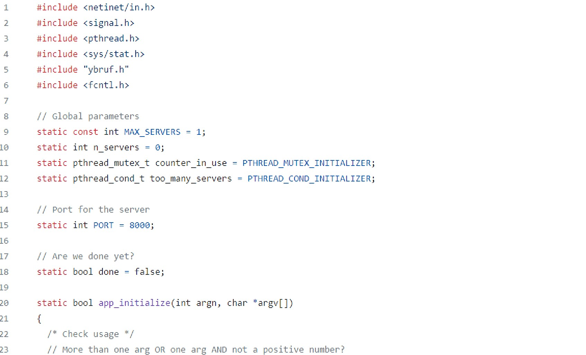

C/C++ Projects
What Is C?
C is a foundational procedural programming language with a focus on efficiency and control, while C++ is an extension of C that adds object-oriented features, making it versatile for a wide range of applications.
Tools And FrameWorks I've Used
Qt - Spring Boot is a popular open-source framework for building Java-based web applications and microservices. It's part of the larger Spring ecosystem, which provides comprehensive tools and libraries for Java developers to create enterprise-grade applications.C POSIX Functions - C POSIX functions are a set of standard functions and libraries. These functions are primarily used for system programming and interacting with the underlying operating system in a platform-independent way. Uses involve file/directory manipulation, process manangement, thread management, networking, signal handling, and much more.Assembly - A low-level programming language that provides a symbolic representation of a computer's machine code instructions. It serves as an intermediary between machine code (binary instructions) and high-level programming languages like C and C++.Bash - A command-line shell and scripting language commonly used on Unix-like operating systems,
Projects Using C/C++
C Webserver
C
C POSIX Functions
Linux
CodeBlock
Collaborated with a team member to create a dynamic C-based web server utilizing POSIX functions and system calls. Orchestrated the integration of multithreading, fostering fluid client-server communication through sockets. Pioneered the inclusion of caching capabilities for previsited documents, subsequently fine-tuning the efficiency of servicing GET requests.
Github Link:
https://github.com/jdegiac/golf-project
